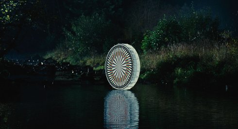

Cavalcade

Johann Lurf
|
AT
2019
|
Donnerstag 10 okt | 19.00 | filmmuseum | opening
Lehrstunde der optischen Täuschung. Ein Wasserrad mit Mustern in unterschiedlichen Formen und Farben dreht sich in einem Bach. Stroboskoplicht, das mit 35mm-Kameras synchronisiert wurde, illuminiert es, während es sich dreht, einmal im, dann gegen den Uhrzeigersinn. „Unsere Wahrnehmung wird auf zwei Arten zugleich ausgetrickst: In der Kamera wird die Illusion eines bewegten Bildes erzeugt, während der Stroboeffekt die Illusion des Stillstands auf der Musterung des Wasserrades verstärkt.“ (Johann Lurf)
Johann Lurf geb. 1982 in Wien. 2002–2009 Studium an der Akademie der bildenden Künste Wien. Diplom bei Harun Farocki. Johann Lurf lebt und arbeitet in Wien. |
Filme Vertigo Rush 2007 | 12 Explosionen 2008 (4. UX) | Zwölf Boxkämpfer jagen… 2009 (5. UX) | Endeavour 2010 | Kreis Wr.Neustadt 2011 (5. UX) | Reconnaissance 2012 (8. UX) | Embargo 2014 (10. UX) | Twelve Tales Told 2014 (10. UX) | Capital Cuba 2015 (11. UX) | ★ 2017 (13. UX) | Cavalcade 2019 |